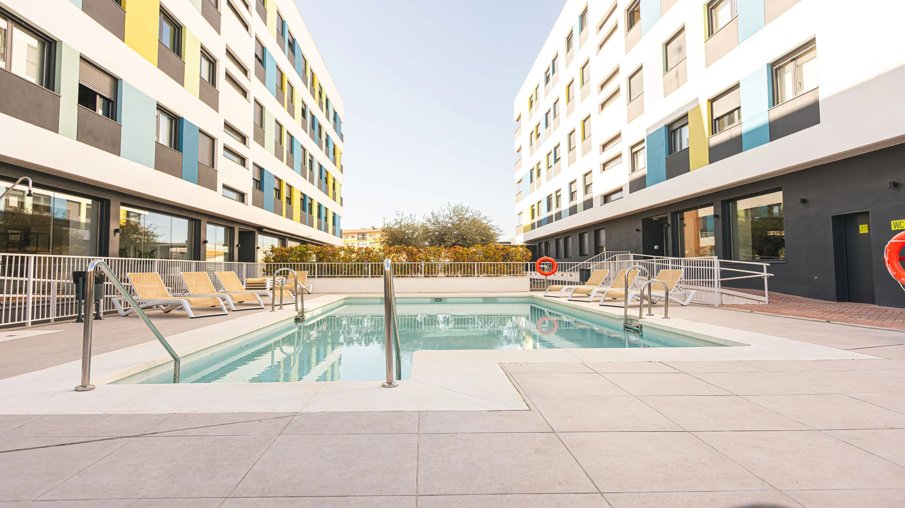
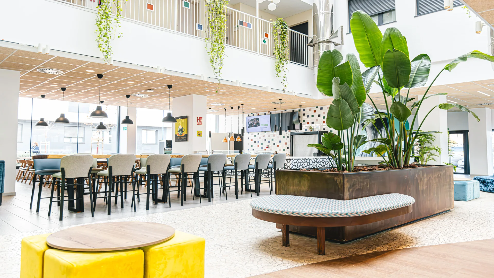
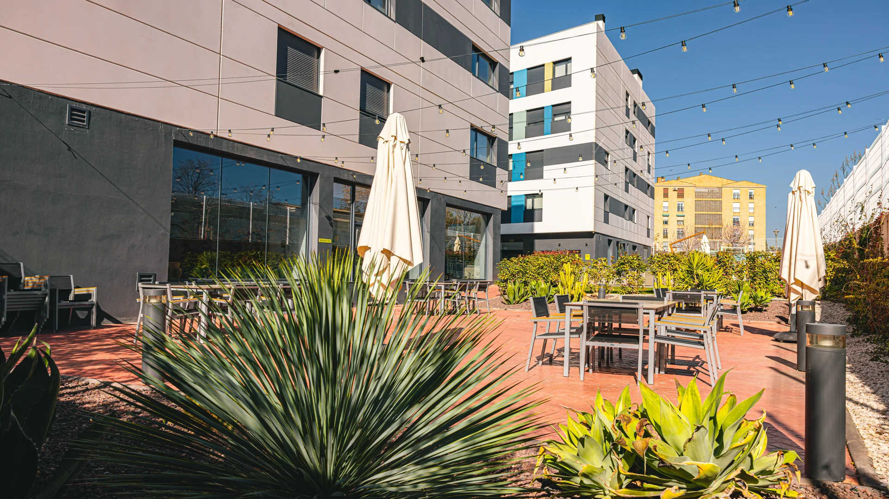

TU RESIDENCIA DE ESTUDIANTES EN GRANADA
Tu nueva etapa.
Tu próximo hogar.
Un espacio para ser tú. Una ciudad por descubrir.
Y muchas historias que empiezan cuando llegas.
01 / BIENVENIDO A VIVA
Hay lugares donde estar.
Y lugares donde pertenecer.
El café antes de clase. Una conversación que se alarga. Tu rincón para concentrarte y esa partida que termina en risas.
En Granada, tu habitación es solo el comienzo. Piscina, cine, gimnasio y espacios de estudio te esperan para encontrar tu propia manera de vivir la universidad.
Así es tu día a día
ESPACIOS REALES. POSIBILIDADES NUEVAS.INDEPENDENCIA + COMUNIDAD
Tu espacio.
Tu gente.
Tu momento.
La privacidad de tu habitación y la libertad de compartir. Encuentra el equilibrio que va contigo.
↗02 / ENCUENTRA TU ESPACIO
Una habitación.
Tu forma de vivirla.
Descansa, estudia y hazla tuya.
Elige cómo quieres empezar esta etapa.
TU RINCÓN, A TU RITMO
Habitación
individual
Un espacio privado con baño propio, zona de estudio y almacenamiento. Para cerrar la puerta, bajar el ritmo y estar a gusto.
- Baño privado
- Escritorio y silla de estudio
- Espacio de almacenamiento
Consulta las tarifas y condiciones vigentes con la residencia.
03 / LA VIDA, FUERA DE TU HABITACIÓN
Aquí también pasan
las cosas buenas.
Del último apunte al próximo plan.
Hay un espacio para cada momento.
Fotografías de la residencia de Granada. Haz clic para explorar cada espacio.
LOS DETALLES QUE SUMAN
Tu día a día,
bien acompañado.
Espacios y servicios de la residencia para que puedas centrarte en tu etapa universitaria.
Wifi de alta velocidad
↗Videovigilancia 24 h
↗Comedor y cocina social
↗Lavandería
↗Terraza y zonas comunes
↗Actividades para compartir
↗
EL EDIFICIO PONE EL ESPACIO.
Tú le das vida.
Las conversaciones, los planes improvisados,
las personas que acabas llamando tu gente.
04 / TU PUNTO DE PARTIDA
Granada.
Y todo lo que viene.
Clase, ciudad y una nueva rutina. Tu residencia está en Calle Acacias, con conexiones de autobús y metro para moverte por Granada.
18015 · Granada
BUSU1 y 4 · Carretera de Málaga
BUS5 y 9 · Villarejo
METROVillarejo
37° N · 3° O
ANTES DE HACER LA MALETA
Vamos a resolver
esas dudas.
¿Qué diferencia hay entre una habitación y un estudio?
El estudio individual incorpora cocina privada y baño propio. La habitación individual tiene baño privado y zona de estudio. En el clúster, la habitación es privada y compartes cocina y salón con otros residentes.
¿Puedo compartir habitación?
La residencia dispone de estudios dobles para dos residentes, con cocina y baño compartidos dentro del estudio. Consulta disponibilidad y condiciones antes de elegir tu estancia.
¿Qué espacios comunes hay?
Entre las instalaciones de Granada hay piscina, gimnasio, sala de cine, salas de estudio, zonas de juegos, karaoke, comedor y terraza. Puedes ver fotografías reales en la galería.
¿Cómo consulto precios o reservo?
Las tarifas dependen del tipo de habitación, la duración y la disponibilidad. Usa los datos de contacto actuales o la web oficial de la residencia para conocer las condiciones y tramitar una reserva.
TU PRÓXIMA ETAPA TE ESPERA
Todo empieza
con un hola.
Conoce los espacios, encuentra tu habitación
y pregunta todo lo que necesites.
HABLA CON LA RESIDENCIA
958 870 050 granada@kadora.euConsultar en la web oficial
Datos de contacto actuales de Kadora Granada.
Las consultas y reservas se gestionan con la residencia.